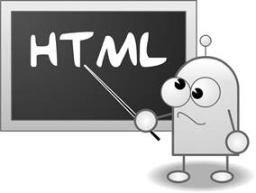
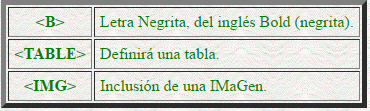

|
HTML
Hace referencia al lenguaje de marcado para
la elaboración de páginas web. Es un estándar que sirve de referencia del
software que conecta con la elaboración de páginas web en sus diferentes
versiones, define una estructura básica y un código (denominado código HTML)
para la definición de contenido de una página web, como texto, imágenes,
videos, juegos, entre otros. Es un estándar a cargo del World Wide Web
Consortium (W3C) o Consorcio WWW, organización dedicada a la estandarización
de casi todas las tecnologías ligadas a la web, sobre todo en lo referente a
su escritura e interpretación. Se considera el lenguaje web más importante
siendo su invención crucial en la aparición, desarrollo y expansión de la
World Wide Web (WWW). Es el estándar que se ha impuesto en la visualización
de páginas web y es el que todos los navegadores actuales han adoptado.
El
primer documento formal con la descripción de HTML se publicó en 1991 bajo el
nombre HTML Tags (Etiquetas HTML) y todavía hoy puede ser consultado online a
modo de reliquia informática.
La
primera propuesta oficial para convertir HTML en un estándar se realizó en
1993 por parte del organismo IETF (Internet Engineering Task Force). Aunque
se consiguieron avances significativos (en esta época se definieron las
etiquetas para imágenes, tablas y formularios) ninguna de las dos propuestas
de estándar, llamadas HTML y HTML+ consiguieron convertirse en estándar
oficial.
En
1995, el organismo IETF organiza un grupo de trabajo de HTML y consigue
publicar, el 22 de septiembre de ese mismo año, el estándar HTML 2.0. A pesar
de su nombre, HTML 2.0 es el primer estándar oficial de HTML.
A
partir de 1996, los estándares de HTML los publica otro organismo de
estandarización llamado W3C (World Wide Web Consortium). La versión HTML 3.2
se publicó el 14 de Enero de 1997 y es la primera recomendación de HTML
publicada por el W3C. Esta revisión incorpora los últimos avances de las páginas
web desarrolladas hasta 1996, como applets de Java y texto que fluye
alrededor de las imágenes.
HTML
4.0 se publicó el 24 de Abril de 1998 (siendo una versión corregida de la
publicación original del 18 de Diciembre de 1997) y supone un gran salto desde
las versiones anteriores. Entre sus novedades más destacadas se encuentran
las hojas de estilos CSS, la posibilidad de incluir pequeños programas o
scripts en las páginas web, mejora de la accesibilidad de las páginas
diseñadas, tablas complejas y mejoras en los formularios.
El
lenguaje HTML es un lenguaje de marcas, estas marcas serán fragmentos de
texto destacado de una forma especial que permiten la definición de las
distintas instrucciones de HTML, tanto los efectos a aplicar sobre el texto
como las distintas estructuras del lenguaje. A estas marcas las denominaremos
etiquetas y serán la base principal del lenguaje HTML. En documento HTML será
un fichero texto con etiquetas que variarán la forma de su presentación.
Una etiqueta será un texto incluido entre los símbolos menor que < y mayor
que >.. El texto incluido dentro de los símbolos será explicativo de la
utilidad de la etiqueta. Por ejemplo:


|
HTML 2.0
|
En 1995 se publica el
estándar HTML 2.0. A pesar de su nombre, HTML 2.0 es el primer estándar
oficial de HTML, es decir, el HTML 1.0 no existió como estándar. HTML 2.0
no soportaba tablas.
Se simplificaba al máximo la
estructura del documento para agilizar su edición, donde la declaración
explícita de los elementos body, html y head es opcional.
|
|
HTML 3.2
|
La versión HTML 3.2 se
publicó en 1997 y es la primera recomendación de HTML publicada por el W3C
(Consorcio internacional). Esta revisión incorporó los últimos avances de
las páginas web desarrolladas hasta 1996, como applets de Java y texto que
fluye alrededor de las imágenes.
|
|
HTML 4.01
|
La última especificación
oficial de HTML se publicó en diciembre de 1999 y se denomina HTML 4.01.
Desde la publicación de HTML 4.01, el W3C se centró en el desarrollo del
estándar XHTML. Por este motivo, en el año 2004, las empresas Apple,
Mozilla y Opera mostraron su preocupación por la falta de interés del W3C
en HTML y decidieron organizarse en una nueva asociación llamada WHATWG
(Web Hypertext Application Technology Working Group) que comenzó el
desarrollo del HTML 5, cuyo primer borrador oficial se publicó en enero de
2008. Debido a la fuerza de las empresas que forman el grupo WHATWG y a la
publicación de los borradores de HTML 5.0, en marzo de 2007 el W3C decidió
retomar la actividad estandarizadora de HTML, dentro del cual decidió
integrar el XHTML.
|
|
HTML 5, HTML 5.1, HTML
5.2
|
El consorcio internacional
W3C, después de una evolución de varios años, liberó el HTML 5 como
estándar oficial a finales de octubre de 2014. HTML 5 incorpora nuevos
elementos no contemplandos en HTML 4.01. Hay diversos cambios respecto a
HTML 4.01. Hay nuevas etiquetas, se introduce la posibilidad de introducir
audio y video de forma directa en la web sin necesidad de plugins o
complementos en los navegadores, y otras novedades. El W3C irá lanzando
progresivamente nuevas evoluciones del HTML 5.
|
|
HTML 4.01 Strict
|
En este tipo de documentos
podemos usar etiquetas HTML 4.01, pero no se aceptan etiquetas obsoletas,
es decir, etiquetas propias de versiones más antiguas. Es la versión que si
usamos en teoría nos debería dar un resultado óptimo en los navegadores más
modernos. Esto no siempre es así, como explicaremos un poco más adelante.
|
|
HTML 4.01 Transitional
|
En este tipo de documentos
se pueden usar todas las etiquetas de todas las versiones de HTML. Usar
esta variante de HTML plantea el interrogante de si es correcto permitir el
uso de etiquetas obsoletas que podrían dejar de funcionar en las proximas
versiones de los navegadores. Sin embargo, este es el estándar más usado,
porque combina la posibilidad de usar etiquetas más antiguas y etiquetas
más modernas, de forma que podamos aspirar a una mejor visualización en la
mayor parte de los navegadores.
|
|
HTML 4.01 Frameset
|
Este tipo de documentos
tiene soporte para frames. Los frames son unos marcos a modo de pequeñas
subventanas dentro de una misma página web que se usaban mucho hace unos
años pero que hoy en día se usan cada vez menos. Este tipo de HTML podemos
considerarlo anticuado, porque hay otras formas de diseñar páginas web sin
frames más modernas y útiles que nos permiten obtener el mismo resultado de
forma más eficiente.
|
|